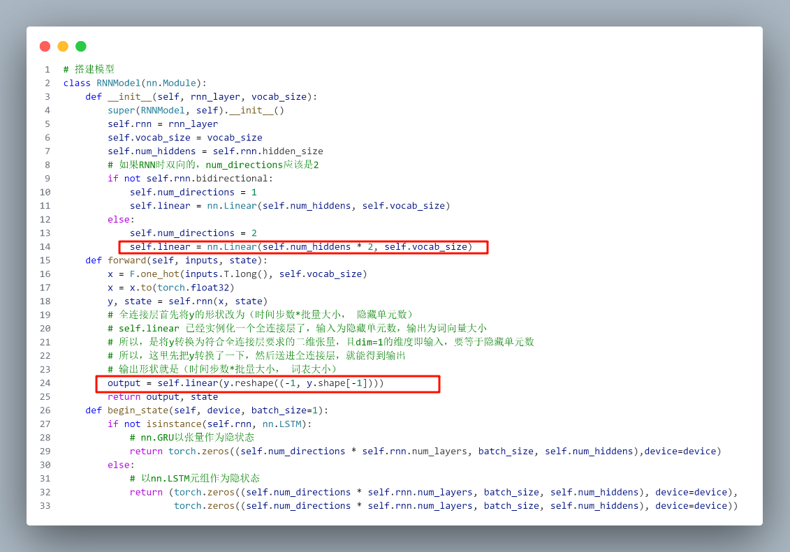
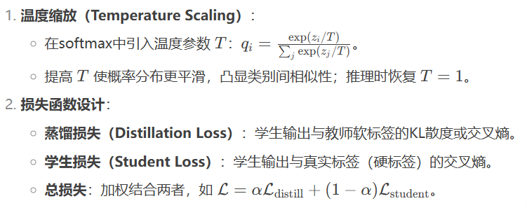

pytorch使用细节杂谈
矩阵相加：
在numpy中(2, 256) + (1, 256)，会把(1, 256)直接复制上面一行变成(2, 256)然后相加，也就是广播机制，也很合理就是直接扩展维度小的相加，在XW+b中用的很多，因为b就是(1, size)的行向量要和前面做相加操作
torch.long()即向下取整
实例和类区别：
实例化的self.linear，就直接调用就好，为什我还傻乎乎的想着输入的y.reshape((-1, y.shape[-1]))是一个（时间步数*批量大小， 隐藏单元数）的二维张量，这明明和前面定义的线性层不一致

参数的requires_grad:
网络中的参数可以设置requires_grad为true还是false，要同时设置这个为true，以及将他注册到优化器中，才会在训练过程中更新参数pytorch中模型参数requires_grad的含义
death_函数
detach_是用来防止梯度积累(不是数值上的爆炸和消失)，是从计算量和内存的角度考虑，因为在前向传播过程中会保存一些相关的信息，以用来反向传播，如果不分离出来每次都会将前一轮的计算图送到后一轮去，导致计算和内存浪费
to函数
to可以改变设备(device)， 当然也可以改变数据类型啊，比如to.(torch.float32)
内存分配的问题
python 是纯面向对象的语言，进行新的操作地址会不一样，所以用z[:] 和 += 方式在原地址操作
1 | # 进行新的操作地址会改变 |
yield:
yield是构造一个生成器，返回迭代器，yield就是return返回一个值，并且记住返回的位置，下次迭代从这开始
squeeze和unsqueeze
squeeze函数：移除张量中所有大小为1的维度，如果指定维度dim的就移除指定维度（前提是维度大小为1，否则无任何操作）
unsqueeze函数：在指定位置插入大小为1的维度，这两个函数指定位置也就是python中正常的索引。
1 | import torch |
切片！！！
切片的维度，我看代码的时候一直理解错的哇
1 | x = torch.randn(size=(32, 2, 60)) |
torch中的交叉熵损失
这个问题，可能是因为太久没有敲过代码有所遗忘吧，在寒假遇到一次在3月开学后又遇到一次。对于一个分类任务，使用CrossEntropyLoss计算损失，模型的输出为(32, 5)，而传入的真实label是（32，）的形状，我一直好奇这是为啥，而后面在用了BCELoss，模型输出是（32,1 ），label也必须是（32， 1）就很疑惑。所以查阅了一些资料渐渐的明白了。
首先，CrossEntropyLoss要求的label类型必须数整数张量，而且范围必须是在0到num_classes - 1之间，所以必须将不合法的字符串的label映射到这个区间，映射可以不必按照字典序，只要一一对应即可，(对于每个样本）在实际计算损失时分为两步：
1. 对模型的输出进行softmax，得到每个类别的概率，
1. 在上述的列表中用**真实label作为索引**，获取模型对他的预测概率，然后计算极大似然损失
所以，在回来看上面对label范围，类型的要求都是合理的，因为要根据labe作为索引取模型对他的预测概率从而计算损失，利用反向传播减小这个损失提升模型正确率。因为是按label作为索引取预测概率，所以字符串label到数字的映射也不必须按照字典序，只是用字典序相对于更不容易出错。
而对于bceloss，一般是用来多标签分类（每个都是0/1，乳腺那道题目)，模型输出一般都会有sigmoid，也就是（4,num_classes），标签也必须是（4，num_classes）,每个标签进行二分类（直接计算他的输出概率，也就是代表正例的概率和标签损失）。num_classes代表几个二分类任务。
. 总结
CrossEntropyLoss：单标签多分类的标配，输入Logits，标签是整数索引。
BCELoss：多标签分类的标配，需手动Sigmoid，标签是0/1的二进制值。
BCEWithLogitsLoss：单标签二分类的优化选择，内置Sigmoid，数值更稳定。
反转卷积
其实就是上采样的一种方式，计算公式：
.deatch().cpu().numpy()
就是一个常用的操作，从计算图中分离出该变量，准确来说是deatch()会创建一个新的张量，requires_grad为False。然后.cpu()是把张量从GPU移动到CPU，再.numpy()将tensor数据类型转换为ndarray
.item()
获取tensor张量的值，从对应的tensor类型转换为python的基本类型，比如torch.int64—>python的int类型，取决于原来tensor是什么类型，可能大多数时候获取的值为python的原生float类型，因为模型训练的时候基本都以float的tensor保存（不绝对，看情况），所以获取张量的值，即为python基本的float类型。
知识蒸馏
主要用于模型压缩和知识迁移，将复杂模型（teacher）的知识传递给小型高效模型（student)，轻量化的同时保持优异的性能。知识形式：
- 软标签：教师模型经过温度缩放调整的softmax输出，蕴含类别间关系。
- 中间特征：教师模型的隐藏层激活值或者注意力图
- 其他：梯度等等
关键在于温度缩放和损失函数设计
